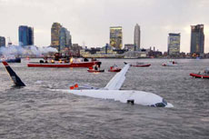

|
DOUBLE TAKE
Johan Grimonprez | B/D/NL 2009 | 80 Min.
Material: HDV
Format: DigiBeta
Original language: English
Script: Johan Grimonprez
Story: Tom McCarthy
Editing: Dieter Diependaele, Tyler Hubby
Music: Christian Halten
With Alfred Hitchcock
Production: ZAP-O-MATIK, Nikovantastic Film, Volya Films
Print/Sales: Umedia
An ingenious hybrid, DOUBLE TAKE is part mock-documentary, part conceptual provocation, and altogether a thought-provoking, hugely entertaining piece that does for Alfred Hitchcock what Orson Welles did for himself in his myth-making F FOR FAKE. Using a zippy assemblage of TV and newsreel material, artist/filmmaker Johan Grimonprez muses on Hitchcock's persona and humour, reading his films of the late 50s and early 60s against the climate of Bomb-era political anxiety. The film especially mulls on Hitchcock's preoccupation with doubles, a theme that recurs not just in his films but in the portly auteur's jokey intros to the vintage TV series "Alfred Hitchcock Presents". Interwoven with all this is a mass of newsreel material, dealing largely with US-USSR Cold War relations. – Jonathan Romney
In his new film artist and filmmaker Johan Grimonprez explores familiar themes: the way television manipulates audiences; induces a sense of fear; blurs the lines between fiction and reality. "The Birds is a metaphor for catastrophe television invading the home" Grimonprez muses. "Against that, there is the historical backdrop of the missile crisis and the Cold War. That is a metaphor for doubles – the double of east and west, the political doubles of one another, both projecting fear but trapped in the same paradigm."
Johan Grimonprez, born in 1962 in Roeselare, Belgium. In 1986 BA in Photography and Mixed Media at the Art Academy in Gent, Belgium. In 1996/97 he teached at the University of Paris and participated at the Documenta X in 1997. His videocollage Dial H-I-S-T-O-R-Y was awarded at numerous festivals such as San Francisco and Toronto and his short film LOOKING FOR ALFRED achieved the New York Spirit Award as well as the International Media Prize for Science and Art ZKM Karlsruhe 2005 and the European Media Award 2006. He lives and works in Brussels and New York where he is visiting professor at the School of Visual Arts.
Films: Kobarwang, or Where is Your Helicopter? 1992 | Dial H-I-S-T-O-R-Y 1997 | Looking for Alfred 2005 | Double Take 2009
back
|